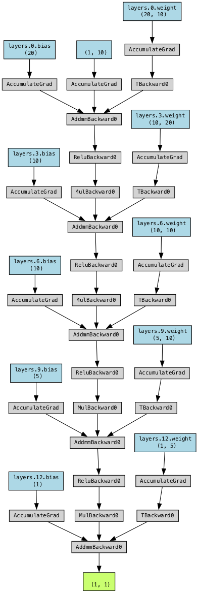

import lightning as L
import torch
from lightning.pytorch.demos import Transformer
class LightningTransformer(L.LightningModule):
def __init__(self, vocab_size):
super().__init__()
self.model = Transformer(vocab_size=vocab_size)
def forward(self, inputs, target):
return self.model(inputs, target)
def training_step(self, batch, batch_idx):
inputs, target = batch
output = self(inputs, target)
loss = torch.nn.functional.nll_loss(output, target.view(-1))
return loss
def configure_optimizers(self):
return torch.optim.SGD(self.model.parameters(), lr=0.1)27 Basic Lightning Module
27.1 Introduction
This chapter implements a basic Pytorch Lightning module. It is based on the Lightning documentation LIGHTNINGMODULE.
A LightningModule organizes your PyTorch code into six sections:
- Initialization (
__init__andsetup()). - Train Loop (
training_step()) - Validation Loop (
validation_step()) - Test Loop (
test_step()) - Prediction Loop (
predict_step()) - Optimizers and LR Schedulers (
configure_optimizers())
The Trainer automates every required step in a clear and reproducible way. It is the most important part of PyTorch Lightning. It is responsible for training, testing, and validating the model. The Lightning core structure looks like this:
net = MyLightningModuleNet()
trainer = Trainer()
trainer.fit(net)There are no .cuda() or .to(device) calls required. Lightning does these for you.
# don't do in Lightning
x = torch.Tensor(2, 3)
x = x.cuda()
x = x.to(device)
# do this instead
x = x # leave it alone!
# or to init a new tensor
new_x = torch.Tensor(2, 3)
new_x = new_x.to(x)A LightningModule is a torch.nn.Module but with added functionality. For example:
net = Net.load_from_checkpoint(PATH)
net.freeze()
out = net(x)27.2 Starter Example: Transformer
Here are the only required methods for setting up a transfomer model:
The LightningTransformer class is a subclass of LightningModule. It can be trainted as follows:
from lightning.pytorch.demos import WikiText2
from torch.utils.data import DataLoader
dataset = WikiText2()
dataloader = DataLoader(dataset)
model = LightningTransformer(vocab_size=dataset.vocab_size)
trainer = L.Trainer(fast_dev_run=100)
trainer.fit(model=model, train_dataloaders=dataloader)27.3 Lightning Core Methods
The LightningModule has many convenient methods, but the core ones you need to know about are shown in Table 27.1.
| Method | Description |
|---|---|
__init__ and setup |
Initializes the model. |
forward |
Performs a forward pass through the model. To run data through your model only (separate from training_step). |
training_step |
Performs a complete training step. |
validation_step |
Performs a complete validation step. |
test_step |
Performs a complete test step. |
predict_step |
Performs a complete prediction step. |
configure_optimizers |
Configures the optimizers and learning-rate schedulers. |
We will take a closer look at thes methods.
27.3.1 Training Step
27.3.1.1 Basics
To activate the training loop, override the training_step() method. If you want to calculate epoch-level metrics and log them, use log().
class LightningTransformer(L.LightningModule):
def __init__(self, vocab_size):
super().__init__()
self.model = Transformer(vocab_size=vocab_size)
def training_step(self, batch, batch_idx):
inputs, target = batch
output = self.model(inputs, target)
loss = torch.nn.functional.nll_loss(output, target.view(-1))
# logs metrics for each training_step,
# and the average across the epoch, to the progress bar and logger
self.log("train_loss", loss, on_step=True, on_epoch=True, prog_bar=True, logger=True)
return lossThe log() method automatically reduces the requested metrics across a complete epoch and devices.
27.3.1.2 Background
- Here is the pseudocode of what the
log()method does under the hood:
outs = []
for batch_idx, batch in enumerate(train_dataloader):
# forward
loss = training_step(batch, batch_idx)
outs.append(loss.detach())
# clear gradients
optimizer.zero_grad()
# backward
loss.backward()
# update parameters
optimizer.step()
# note: in reality, we do this incrementally, instead of keeping all outputs in memory
epoch_metric = torch.mean(torch.stack(outs))- In the case that you need to make use of all the outputs from each
training_step(), override theon_train_epoch_end()method.
class LightningTransformer(L.LightningModule):
def __init__(self, vocab_size):
super().__init__()
self.model = Transformer(vocab_size=vocab_size)
self.training_step_outputs = []
def training_step(self, batch, batch_idx):
inputs, target = batch
output = self.model(inputs, target)
loss = torch.nn.functional.nll_loss(output, target.view(-1))
preds = ...
self.training_step_outputs.append(preds)
return loss
def on_train_epoch_end(self):
all_preds = torch.stack(self.training_step_outputs)
# do something with all preds
...
self.training_step_outputs.clear() # free memory27.3.2 Validation Step
27.3.2.1 Basics
To activate the validation loop while training, override the validation_step() method.
class LightningTransformer(L.LightningModule):
def validation_step(self, batch, batch_idx):
inputs, target = batch
output = self.model(inputs, target)
loss = F.cross_entropy(y_hat, y)
self.log("val_loss", loss)
return loss27.3.2.2 Background
- You can also run just the validation loop on your validation dataloaders by overriding
validation_step()and callingvalidate().
model = LightningTransformer(vocab_size=dataset.vocab_size)
trainer = L.Trainer()
trainer.validate(model)- In the case that you need to make use of all the outputs from each
validation_step(), override theon_validation_epoch_end()method. Note that this method is called beforeon_train_epoch_end().
class LightningTransformer(L.LightningModule):
def __init__(self, vocab_size):
super().__init__()
self.model = Transformer(vocab_size=vocab_size)
self.validation_step_outputs = []
def validation_step(self, batch, batch_idx):
x, y = batch
inputs, target = batch
output = self.model(inputs, target)
loss = torch.nn.functional.nll_loss(output, target.view(-1))
pred = ...
self.validation_step_outputs.append(pred)
return pred
def on_validation_epoch_end(self):
all_preds = torch.stack(self.validation_step_outputs)
# do something with all preds
...
self.validation_step_outputs.clear() # free memory27.3.3 Test Step
The process for enabling a test loop is the same as the process for enabling a validation loop. For this you need to override the test_step() method. The only difference is that the test loop is only called when test() is used.
def test_step(self, batch, batch_idx):
inputs, target = batch
output = self.model(inputs, target)
loss = F.cross_entropy(y_hat, y)
self.log("test_loss", loss)
return loss27.3.4 Predict Step
27.3.4.1 Basics
By default, the predict_step() method runs the forward() method. In order to customize this behaviour, simply override the predict_step() method.
class LightningTransformer(L.LightningModule):
def __init__(self, vocab_size):
super().__init__()
self.model = Transformer(vocab_size=vocab_size)
def predict_step(self, batch):
inputs, target = batch
return self.model(inputs, target)27.3.4.2 Background
- If you want to perform inference with the system, you can add a
forwardmethod to the LightningModule. - When using forward, you are responsible to call
eval()and use theno_grad()context manager.
class LightningTransformer(L.LightningModule):
def __init__(self, vocab_size):
super().__init__()
self.model = Transformer(vocab_size=vocab_size)
def forward(self, batch):
inputs, target = batch
return self.model(inputs, target)
def training_step(self, batch, batch_idx):
inputs, target = batch
output = self.model(inputs, target)
loss = torch.nn.functional.nll_loss(output, target.view(-1))
return loss
def configure_optimizers(self):
return torch.optim.SGD(self.model.parameters(), lr=0.1)
model = LightningTransformer(vocab_size=dataset.vocab_size)
model.eval()
with torch.no_grad():
batch = dataloader.dataset[0]
pred = model(batch)27.4 Lightning Extras
This section covers some additional features of Lightning.
27.4.1 Lightning: Save Hyperparameters
Often times we train many versions of a model. You might share that model or come back to it a few months later at which point it is very useful to know how that model was trained (i.e.: what learning rate, neural network, etc.).
Lightning has a standardized way of saving the information for you in checkpoints and YAML files. The goal here is to improve readability and reproducibility.
Use save_hyperparameters() within your LightningModule’s __init__ method. It will enable Lightning to store all the provided arguments under the self.hparams attribute. These hyperparameters will also be stored within the model checkpoint, which simplifies model re-instantiation after training.
class LitMNIST(L.LightningModule):
def __init__(self, layer_1_dim=128, learning_rate=1e-2):
super().__init__()
# call this to save (layer_1_dim=128, learning_rate=1e-4) to the checkpoint
self.save_hyperparameters()
# equivalent
self.save_hyperparameters("layer_1_dim", "learning_rate")
# Now possible to access layer_1_dim from hparams
self.hparams.layer_1_dim27.4.2 Lightning: Model Loading
LightningModules that have hyperparameters automatically saved with save_hyperparameters() can conveniently be loaded and instantiated directly from a checkpoint with load_from_checkpoint():
# to load specify the other args
model = LitMNIST.load_from_checkpoint(PATH, loss_fx=torch.nn.SomeOtherLoss, generator_network=MyGenerator())27.5 Starter Example: Linear Neural Network
We will use the LightningModule to create a simple neural network for regression. It will be implemented as the LightningBasic class.
27.5.2 Hyperparameters
The argument l1 will be treated as a hyperparameter, so it will be tuned in the following steps. Besides l1, additonal hyperparameters are act_fn and dropout_prob.
The arguments _L_in, _L_out, and _torchmetric are not hyperparameters, but are needed to create the network. The first two are specified by the data and the latter by user preferences (the desired evaluation metric).
27.5.3 The LightningBasic Class
import lightning as L
import torch
import torch.nn.functional as F
import torchmetrics.functional.regression
from torch import nn
from spotpython.hyperparameters.architecture import get_hidden_sizes
class LightningBasic(L.LightningModule):
def __init__(
self,
l1: int,
act_fn: nn.Module,
dropout_prob: float,
_L_in: int,
_L_out: int,
_torchmetric: str,
*args,
**kwargs):
super().__init__()
self._L_in = _L_in
self._L_out = _L_out
self._torchmetric = _torchmetric
self.metric = getattr(torchmetrics.functional.regression, _torchmetric)
# _L_in and _L_out are not hyperparameters, but are needed to create the network
# _torchmetric is not a hyperparameter, but is needed to calculate the loss
self.save_hyperparameters(ignore=["_L_in", "_L_out", "_torchmetric"])
# set dummy input array for Tensorboard Graphs
# set log_graph=True in Trainer to see the graph (in traintest.py)
hidden_sizes = get_hidden_sizes(_L_in=self._L_in, l1=l1, max_n=4)
# Create the network based on the specified hidden sizes
layers = []
layer_sizes = [self._L_in] + hidden_sizes
layer_size_last = layer_sizes[0]
for layer_size in layer_sizes[1:]:
layers += [
nn.Linear(layer_size_last, layer_size),
self.hparams.act_fn,
nn.Dropout(self.hparams.dropout_prob),
]
layer_size_last = layer_size
layers += [nn.Linear(layer_sizes[-1], self._L_out)]
# nn.Sequential summarizes a list of modules into a single module,
# applying them in sequence
self.layers = nn.Sequential(*layers)
def _calculate_loss(self, batch):
x, y = batch
y = y.view(len(y), 1)
y_hat = self.layers(x)
loss = self.metric(y_hat, y)
return loss
def forward(self, x: torch.Tensor) -> torch.Tensor:
return self.layers(x)
def training_step(self, batch: tuple) -> torch.Tensor:
loss = self._calculate_loss(batch)
self.log("train_loss", loss, on_step=True, on_epoch=True, prog_bar=True, logger=True)
return loss
def validation_step(self, batch: tuple) -> torch.Tensor:
loss = self._calculate_loss(batch)
# logs metrics for each training_step,
# and the average across the epoch, to the progress bar and logger
self.log("val_loss", loss, on_step=True, on_epoch=True, prog_bar=True, logger=True)
return loss
def test_step(self, batch, batch_idx):
loss = self._calculate_loss(batch)
# logs metrics for each training_step,
# and the average across the epoch, to the progress bar and logger
self.log("test_loss", loss, on_step=True, on_epoch=True, prog_bar=True, logger=True)
return loss
def predict_step(self, batch, batch_idx, dataloader_idx=0):
x, _ = batch
y_hat = self.layers(x)
return y_hat
def configure_optimizers(self):
return torch.optim.Adam(self.layers.parameters(), lr=0.02)We can instantiate the LightningBasic class as follows:
model_base = LightningBasic(
l1=20,
act_fn=nn.ReLU(),
dropout_prob=0.01,
_L_in=10,
_L_out=1,
_torchmetric="mean_squared_error")It has the following structure:
print(model_base)LightningBasic(
(layers): Sequential(
(0): Linear(in_features=10, out_features=20, bias=True)
(1): ReLU()
(2): Dropout(p=0.01, inplace=False)
(3): Linear(in_features=20, out_features=10, bias=True)
(4): ReLU()
(5): Dropout(p=0.01, inplace=False)
(6): Linear(in_features=10, out_features=10, bias=True)
(7): ReLU()
(8): Dropout(p=0.01, inplace=False)
(9): Linear(in_features=10, out_features=5, bias=True)
(10): ReLU()
(11): Dropout(p=0.01, inplace=False)
(12): Linear(in_features=5, out_features=1, bias=True)
)
)from spotpython.plot.xai import viz_net
viz_net(net=model_base,
device="cpu",
filename="model_architecture700", format="png")
27.5.4 The Data Set: Diabetes
We will use the Diabetes [DOC] data set from the spotpython package, which is a PyTorch Dataset for regression based on a data set from scikit-learn. It consists of DataFrame entries, which were converted to PyTorch tensors.
Ten baseline variables, age, sex, body mass index, average blood pressure, and six blood serum measurements were obtained for each of n = 442 diabetes patients, as well as the response of interest, a quantitative measure of disease progression one year after baseline.
The Diabetes data set has the following properties:
- Number of Instances: 442
- Number of Attributes: First 10 columns are numeric predictive values.
- Target: Column 11 is a quantitative measure of disease progression one year after baseline.
- Attribute Information:
- age age in years
- sex
- bmi body mass index
- bp average blood pressure
- s1 tc, total serum cholesterol
- s2 ldl, low-density lipoproteins
- s3 hdl, high-density lipoproteins
- s4 tch, total cholesterol / HDL
- s5 ltg, possibly log of serum triglycerides level
- s6 glu, blood sugar level
from torch.utils.data import DataLoader
from spotpython.data.diabetes import Diabetes
import torch
dataset = Diabetes(feature_type=torch.float32, target_type=torch.float32)
# Set batch size for DataLoader to 2 for demonstration purposes
batch_size = 2
dataloader = DataLoader(dataset, batch_size=batch_size, shuffle=False)
for batch in dataloader:
inputs, targets = batch
print(f"Batch Size: {inputs.size(0)}")
print("---------------")
print(f"Inputs: {inputs}")
print(f"Targets: {targets}")
breakBatch Size: 2
---------------
Inputs: tensor([[ 0.0381, 0.0507, 0.0617, 0.0219, -0.0442, -0.0348, -0.0434, -0.0026,
0.0199, -0.0176],
[-0.0019, -0.0446, -0.0515, -0.0263, -0.0084, -0.0192, 0.0744, -0.0395,
-0.0683, -0.0922]])
Targets: tensor([151., 75.])27.5.5 The DataLoaders
Before we can call the Trainer to fit, validate, and test the model, we need to create the DataLoaders for each of these steps. The DataLoaders are used to load the data into the model in batches and need the batch_size.
import torch
from spotpython.data.diabetes import Diabetes
from torch.utils.data import DataLoader
batch_size = 8
dataset = Diabetes(target_type=torch.float)
train1_set, test_set = torch.utils.data.random_split(dataset, [0.6, 0.4])
train_set, val_set = torch.utils.data.random_split(train1_set, [0.6, 0.4])
print(f"Full Data Set: {len(dataset)}")
print(f"Train Set: {len(train_set)}")
print(f"Validation Set: {len(val_set)}")
print(f"Test Set: {len(test_set)}")
train_loader = DataLoader(train_set, batch_size=batch_size, shuffle=True, drop_last=True, pin_memory=True)
test_loader = DataLoader(test_set, batch_size=batch_size)
val_loader = DataLoader(val_set, batch_size=batch_size)Full Data Set: 442
Train Set: 160
Validation Set: 106
Test Set: 17627.5.6 The Trainer
Now we are ready to train the model. We will use the Trainer class from the lightning package. For demonstration purposes, we will train the model for 100 epochs only.
epochs = 100
trainer = L.Trainer(max_epochs=epochs, enable_progress_bar=True)
trainer.fit(model=model_base, train_dataloaders=train_loader)trainer.validate(model_base, val_loader)# automatically loads the best weights for you
out = trainer.test(model_base, test_loader, verbose=True)┏━━━━━━━━━━━━━━━━━━━━━━━━━━━┳━━━━━━━━━━━━━━━━━━━━━━━━━━━┓ ┃ Test metric ┃ DataLoader 0 ┃ ┡━━━━━━━━━━━━━━━━━━━━━━━━━━━╇━━━━━━━━━━━━━━━━━━━━━━━━━━━┩ │ test_loss_epoch │ 3327.031982421875 │ └───────────────────────────┴───────────────────────────┘
yhat = trainer.predict(model_base, test_loader)
# convert the list of tensors to a numpy array
yhat = torch.cat(yhat).numpy()
yhat.shape27.5.7 Using a DataModule
Instead of creating the three DataLoaders manually, we can use the LightDataModule class from the spotpython package.
from spotpython.data.lightdatamodule import LightDataModule
dataset = Diabetes(target_type=torch.float)
data_module = LightDataModule(dataset=dataset, batch_size=5, test_size=0.4)
data_module.setup()There is a minor difference in the sizes of the data sets due to the random split as can be seen in the following code:
print(f"Full Data Set: {len(dataset)}")
print(f"Training set size: {len(data_module.data_train)}")
print(f"Validation set size: {len(data_module.data_val)}")
print(f"Test set size: {len(data_module.data_test)}")Full Data Set: 442
Training set size: 160
Validation set size: 106
Test set size: 177The DataModule can be used to train the model as follows:
trainer = L.Trainer(max_epochs=epochs, enable_progress_bar=False)
trainer.fit(model=model_base, datamodule=data_module)trainer.validate(model=model_base, datamodule=data_module, verbose=True, ckpt_path=None)┏━━━━━━━━━━━━━━━━━━━━━━━━━━━┳━━━━━━━━━━━━━━━━━━━━━━━━━━━┓ ┃ Validate metric ┃ DataLoader 0 ┃ ┡━━━━━━━━━━━━━━━━━━━━━━━━━━━╇━━━━━━━━━━━━━━━━━━━━━━━━━━━┩ │ val_loss_epoch │ 2840.697998046875 │ └───────────────────────────┴───────────────────────────┘
[{'val_loss_epoch': 2840.697998046875}]trainer.test(model=model_base, datamodule=data_module, verbose=True, ckpt_path=None)┏━━━━━━━━━━━━━━━━━━━━━━━━━━━┳━━━━━━━━━━━━━━━━━━━━━━━━━━━┓ ┃ Test metric ┃ DataLoader 0 ┃ ┡━━━━━━━━━━━━━━━━━━━━━━━━━━━╇━━━━━━━━━━━━━━━━━━━━━━━━━━━┩ │ test_loss_epoch │ 2527.65283203125 │ └───────────────────────────┴───────────────────────────┘
[{'test_loss_epoch': 2527.65283203125}]27.6 Using spotpython with Pytorch Lightning
import os
from math import inf
import warnings
warnings.filterwarnings("ignore")
from spotpython.data.diabetes import Diabetes
from spotpython.hyperdict.light_hyper_dict import LightHyperDict
from spotpython.fun.hyperlight import HyperLight
from spotpython.utils.init import (fun_control_init, surrogate_control_init, design_control_init)
from spotpython.utils.eda import print_exp_table, print_res_table
from spotpython.spot import Spot
from spotpython.utils.file import get_experiment_filenamePREFIX="700"
data_set = Diabetes()
fun_control = fun_control_init(
PREFIX=PREFIX,
save_experiment=True,
fun_evals=inf,
fun_repeats=2,
max_time=1,
data_set=data_set,
core_model_name="light.regression.NNLinearRegressor",
hyperdict=LightHyperDict,
_L_in=10,
_L_out=1,
TENSORBOARD_CLEAN=True,
tensorboard_log=True,
noise=True,
ocba_delta = 1, )
fun = HyperLight().fun
from spotpython.hyperparameters.values import set_hyperparameter
set_hyperparameter(fun_control, "optimizer", [ "Adadelta", "Adam", "Adamax"])
set_hyperparameter(fun_control, "l1", [3,4])
set_hyperparameter(fun_control, "epochs", [3,7])
set_hyperparameter(fun_control, "batch_size", [4,11])
set_hyperparameter(fun_control, "dropout_prob", [0.0, 0.025])
set_hyperparameter(fun_control, "patience", [2,3])
design_control = design_control_init(init_size=10, repeats=2)
print_exp_table(fun_control)
spot_tuner = Spot(fun=fun,fun_control=fun_control, design_control=design_control)
res = spot_tuner.run()
spot_tuner.plot_progress()
print_res_table(spot_tuner)Moving TENSORBOARD_PATH: runs/ to TENSORBOARD_PATH_OLD: runs_OLD/runs_2025_01_23_18_24_18_0
Created spot_tensorboard_path: runs/spot_logs/700_maans08_2025-01-23_18-24-18 for SummaryWriter()
module_name: light
submodule_name: regression
model_name: NNLinearRegressor
| name | type | default | lower | upper | transform |
|----------------|--------|-----------|---------|---------|-----------------------|
| l1 | int | 3 | 3 | 4 | transform_power_2_int |
| epochs | int | 4 | 3 | 7 | transform_power_2_int |
| batch_size | int | 4 | 4 | 11 | transform_power_2_int |
| act_fn | factor | ReLU | 0 | 5 | None |
| optimizer | factor | SGD | 0 | 2 | None |
| dropout_prob | float | 0.01 | 0 | 0.025 | None |
| lr_mult | float | 1.0 | 0.1 | 10 | None |
| patience | int | 2 | 2 | 3 | transform_power_2_int |
| batch_norm | factor | 0 | 0 | 1 | None |
| initialization | factor | Default | 0 | 4 | None |
Experiment saved to 700_exp.pkltrain_model result: {'val_loss': 23075.166015625, 'hp_metric': 23075.166015625}train_model result: {'val_loss': 23030.626953125, 'hp_metric': 23030.626953125}train_model result: {'val_loss': 3513.03369140625, 'hp_metric': 3513.03369140625}train_model result: {'val_loss': 3551.98291015625, 'hp_metric': 3551.98291015625}train_model result: {'val_loss': 4963.52001953125, 'hp_metric': 4963.52001953125}train_model result: {'val_loss': 4926.52197265625, 'hp_metric': 4926.52197265625}train_model result: {'val_loss': 24008.51171875, 'hp_metric': 24008.51171875}train_model result: {'val_loss': 24022.390625, 'hp_metric': 24022.390625}train_model result: {'val_loss': 22686.830078125, 'hp_metric': 22686.830078125}train_model result: {'val_loss': 22769.0234375, 'hp_metric': 22769.0234375}train_model result: {'val_loss': 4178.58544921875, 'hp_metric': 4178.58544921875}train_model result: {'val_loss': 4762.07421875, 'hp_metric': 4762.07421875}train_model result: {'val_loss': 20378.58984375, 'hp_metric': 20378.58984375}train_model result: {'val_loss': 20699.623046875, 'hp_metric': 20699.623046875}train_model result: {'val_loss': 4869.2978515625, 'hp_metric': 4869.2978515625}train_model result: {'val_loss': 5199.0341796875, 'hp_metric': 5199.0341796875}train_model result: {'val_loss': 20183.302734375, 'hp_metric': 20183.302734375}train_model result: {'val_loss': 20822.919921875, 'hp_metric': 20822.919921875}train_model result: {'val_loss': 23720.89453125, 'hp_metric': 23720.89453125}
train_model result: {'val_loss': 21960.509765625, 'hp_metric': 21960.509765625}train_model result: {'val_loss': 5728.47900390625, 'hp_metric': 5728.47900390625}train_model result: {'val_loss': nan, 'hp_metric': nan}
train_model result: {'val_loss': nan, 'hp_metric': nan}
spotpython tuning: 3513.03369140625 [----------] 3.49% train_model result: {'val_loss': 5060.87451171875, 'hp_metric': 5060.87451171875}train_model result: {'val_loss': nan, 'hp_metric': nan}
train_model result: {'val_loss': nan, 'hp_metric': nan}
spotpython tuning: 3513.03369140625 [#---------] 6.66% train_model result: {'val_loss': 3794.443359375, 'hp_metric': 3794.443359375}
train_model result: {'val_loss': nan, 'hp_metric': nan}
train_model result: {'val_loss': nan, 'hp_metric': nan}
spotpython tuning: 3513.03369140625 [#---------] 9.63% train_model result: {'val_loss': 4064.668701171875, 'hp_metric': 4064.668701171875}train_model result: {'val_loss': 17511.390625, 'hp_metric': 17511.390625}train_model result: {'val_loss': 8440.685546875, 'hp_metric': 8440.685546875}
spotpython tuning: 3513.03369140625 [#---------] 14.24% train_model result: {'val_loss': 3711.4404296875, 'hp_metric': 3711.4404296875}train_model result: {'val_loss': 7058.2275390625, 'hp_metric': 7058.2275390625}
train_model result: {'val_loss': 5590.2109375, 'hp_metric': 5590.2109375}
spotpython tuning: 3513.03369140625 [##--------] 23.70% train_model result: {'val_loss': 4243.3974609375, 'hp_metric': 4243.3974609375}train_model result: {'val_loss': 23590.166015625, 'hp_metric': 23590.166015625}train_model result: {'val_loss': 23623.22265625, 'hp_metric': 23623.22265625}
spotpython tuning: 3513.03369140625 [####------] 35.29% train_model result: {'val_loss': 4261.4521484375, 'hp_metric': 4261.4521484375}train_model result: {'val_loss': 3403.459228515625, 'hp_metric': 3403.459228515625}
train_model result: {'val_loss': 3452.587158203125, 'hp_metric': 3452.587158203125}
spotpython tuning: 3403.459228515625 [####------] 40.60% train_model result: {'val_loss': 3135.74658203125, 'hp_metric': 3135.74658203125}train_model result: {'val_loss': 3828.862060546875, 'hp_metric': 3828.862060546875}
train_model result: {'val_loss': 4306.16650390625, 'hp_metric': 4306.16650390625}
spotpython tuning: 3135.74658203125 [####------] 44.57% train_model result: {'val_loss': 3310.604736328125, 'hp_metric': 3310.604736328125}train_model result: {'val_loss': 3489.9521484375, 'hp_metric': 3489.9521484375}
train_model result: {'val_loss': 5715.71044921875, 'hp_metric': 5715.71044921875}
spotpython tuning: 3135.74658203125 [#####-----] 49.05% train_model result: {'val_loss': 3821.005126953125, 'hp_metric': 3821.005126953125}train_model result: {'val_loss': 11435.1318359375, 'hp_metric': 11435.1318359375}train_model result: {'val_loss': 10850.2841796875, 'hp_metric': 10850.2841796875}
spotpython tuning: 3135.74658203125 [######----] 58.94% train_model result: {'val_loss': 3358.244384765625, 'hp_metric': 3358.244384765625}train_model result: {'val_loss': 16495.625, 'hp_metric': 16495.625}train_model result: {'val_loss': 8619.1123046875, 'hp_metric': 8619.1123046875}
spotpython tuning: 3135.74658203125 [######----] 62.27% train_model result: {'val_loss': 3409.62646484375, 'hp_metric': 3409.62646484375}train_model result: {'val_loss': 3474.796630859375, 'hp_metric': 3474.796630859375}
train_model result: {'val_loss': 3380.245849609375, 'hp_metric': 3380.245849609375}
spotpython tuning: 3135.74658203125 [#######---] 67.75% train_model result: {'val_loss': 3281.23046875, 'hp_metric': 3281.23046875}train_model result: {'val_loss': 3394.05029296875, 'hp_metric': 3394.05029296875}
train_model result: {'val_loss': 3369.273681640625, 'hp_metric': 3369.273681640625}
spotpython tuning: 3135.74658203125 [#######---] 72.69% train_model result: {'val_loss': 3305.697998046875, 'hp_metric': 3305.697998046875}train_model result: {'val_loss': 3359.771728515625, 'hp_metric': 3359.771728515625}
train_model result: {'val_loss': 3172.615966796875, 'hp_metric': 3172.615966796875}
spotpython tuning: 3135.74658203125 [########--] 79.28% train_model result: {'val_loss': 3418.2001953125, 'hp_metric': 3418.2001953125}train_model result: {'val_loss': 3207.743896484375, 'hp_metric': 3207.743896484375}
train_model result: {'val_loss': 3274.938720703125, 'hp_metric': 3274.938720703125}
spotpython tuning: 3135.74658203125 [########--] 84.80% train_model result: {'val_loss': 3430.136474609375, 'hp_metric': 3430.136474609375}train_model result: {'val_loss': 3433.91796875, 'hp_metric': 3433.91796875}train_model result: {'val_loss': 3588.395263671875, 'hp_metric': 3588.395263671875}
spotpython tuning: 3135.74658203125 [#########-] 89.77% train_model result: {'val_loss': 3146.535400390625, 'hp_metric': 3146.535400390625}train_model result: {'val_loss': 3127.95703125, 'hp_metric': 3127.95703125}
train_model result: {'val_loss': 3230.30419921875, 'hp_metric': 3230.30419921875}
spotpython tuning: 3127.95703125 [##########] 96.68% train_model result: {'val_loss': 3611.784423828125, 'hp_metric': 3611.784423828125}train_model result: {'val_loss': 3422.946044921875, 'hp_metric': 3422.946044921875}train_model result: {'val_loss': 3225.615966796875, 'hp_metric': 3225.615966796875}
spotpython tuning: 3127.95703125 [##########] 100.00% Done...
Experiment saved to 700_res.pkl
| name | type | default | lower | upper | tuned | transform | importance | stars |
|----------------|--------|-----------|---------|---------|---------------------|-----------------------|--------------|---------|
| l1 | int | 3 | 3.0 | 4.0 | 3.0 | transform_power_2_int | 0.06 | |
| epochs | int | 4 | 3.0 | 7.0 | 5.0 | transform_power_2_int | 0.41 | . |
| batch_size | int | 4 | 4.0 | 11.0 | 6.0 | transform_power_2_int | 0.00 | |
| act_fn | factor | ReLU | 0.0 | 5.0 | ReLU | None | 0.00 | |
| optimizer | factor | SGD | 0.0 | 2.0 | Adadelta | None | 6.83 | * |
| dropout_prob | float | 0.01 | 0.0 | 0.025 | 0.01585863157556743 | None | 100.00 | *** |
| lr_mult | float | 1.0 | 0.1 | 10.0 | 1.3879326449930574 | None | 0.13 | . |
| patience | int | 2 | 2.0 | 3.0 | 3.0 | transform_power_2_int | 91.33 | ** |
| batch_norm | factor | 0 | 0.0 | 1.0 | 0 | None | 0.04 | |
| initialization | factor | Default | 0.0 | 4.0 | kaiming_normal | None | 0.00 | |